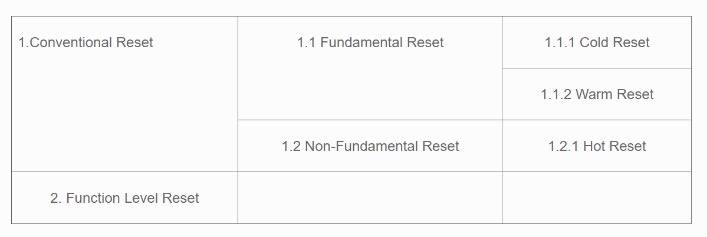
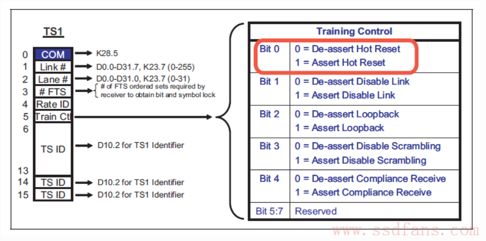

PCIe Reset

Fundamental Reset：
硬件控制，重启整个device，包括状态机，配置寄存器等，但是sticky 属性的不会变，除非断电。
sticky 在debug时候很有用，reset link以后，还能保存错误状态，方便固件。
fundamental reset 一般发生在重启系统的时候。当然也可以对某个设备做reset。
**Fundamental Reset有两种： **
-
Cold Reset: Power Off/On Device的Vcc （Vaux一直在）
-
Warm Reset （Optional）: 保持Vcc的情况下由系统触发，比如改变系统的电源管理状态可能会触发Device的warm reset，PCIe协议没有定义具体如何触发Warm Reset的，而是把决定权交给系统。
-
系统这边发PERST# （PCIe Express Reset）信号给Device；
- 以下图为例
- 一个系统上电时，主电源稳定以后会有”Power Good”信号
- 这时ICH就会发PERST# 信号给下面挂的PCIe SSD
- 如果系统重启，Power Good信号的变化会触发PERST# 的Assert和De-Assert，就可以实现PCIe Device的Cold Reset
- 如果系统可以提供Power Good信号以外的方法触发PERST#，就可以实现Warm Reset
- PERST#信号会发送给所有PCIe Device，Device可以选择使用这个信号，也可以不理它
-
如果这块PCIe Device不支持PERST#信号，那上电时他会自动进行Fundamental Reset;
- 那些特例独行，选择不理睬PERST#信号的Device，必须能自己触发Fundamental Reset
- 比如，侦测到3.3V后就触发Reset （当Device发现供电超过其标准电压时，也必须触发Reset）
**Hot Reset：**通过Assert TS1的Symbol 5的Bit [0] 实现：

PCIe Device收到两个连续的带Hot Reset的TS1 后，经过2ms的timeout：
- LTSSM经过Recovery和Hot Reset State，最终停在Detect State （Link training的初始状态）
- Device所有的State Machine，所有的硬件逻辑，Port State和configuration register（Sticky bit 除外）全部回到初始值
当PCIe Device出现问题时，可以通过软件触发Hot Reset使其恢复,具体方法如下:
对 RC的Bridge Control Register Bit[6] – Secondary Bus Reset写’1’。
- RC会开始发带Hot Reset的TS1
- 2ms后Device会进入Hot Reset状态，此时LTSSM的状态变化是 L0 -> RCVRY -> HOTRESET
- 将RC的Bridge Control Register Bit[6] – Secondary Bus Reset清零， Device的LTSSM的状态变化HOTRESET -> DETECT
- 重新开始LTSSM进行Link Training
软件还可以通过设置Device的Link Control Register [2] – link disable bit 把Device disable掉。
当Device的Link Disable bit被置上以后，会进入LTSSM Recovery State，开始向RC发送带Disable bit的TS1（这个动作只能由EP发起，RC端这个bit是reserve的）。
RC端收到这样的TS1以后，其物理层会发送LinkUp=0的信号给链路层，之后所有的Lane都会进入Electrical Idle。2ms timeout以后，RC会进入LTSSM Detect mode，但是Device会一直停留在LTSSM的Disable状态，等待重出江湖的那一天。
**FLR （Function Level Reset）：**PCIe Link就像一条大马路，上面可以跑各种各种的车，这些车就是不同的Function。如果某个Function出了问题，当然可以通过Reset整个Link的方式来解决，不过细腻的呆哥当然不会采取这种方法，他会使用Function Level Reset，哪里不舒服点哪里。并不是所有的Device都支持FLR，需要检查Device Capabilities Register[28]进行确认。
FLR会把对应Function的内部状态，寄存器重置，但是以下寄存器不会受到影响：
-
Sticky bits – cold reset和warm reset都拿他们没辙
-
HwIint类型的寄存器。在PCIe设备中，有效配置寄存器的属性为HwIint，这些寄存器的值由芯片的配置引脚决定，后者上电复位后从EEPROM中获取。Cold和Warm Reset可以复位这些寄存器，然后从EEPROM中从新获取数据，但是使用FLR方式不能复位这些寄存器。
-
一些特殊的配置寄存器，比如Captured Power, ASPM Control, Max_Payload_Size或者Virtual Channel
-
FLR不会改变Device的LTSSM状态
根据实际测试BAR里的东西也没了。
参考：
http://www.ssdfans.com/?p=4143